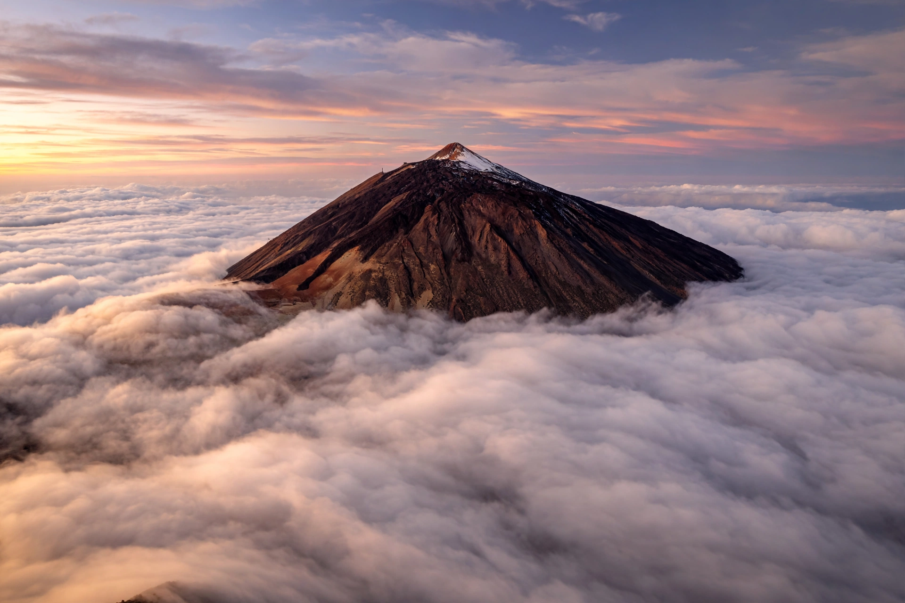

Tenerife is the largest and most populous island of the Canary Islands, an autonomous community of Spain in the Atlantic Ocean off northwest Africa. It has a land area of 2,034 square kilometres and a population of over 900,000, making it also the most populous island of Spain. Its capital, Santa Cruz de Tenerife, is co-capital (with Las Palmas de Gran Canaria) of the autonomous community. Tenerife receives millions of tourists each year and is known for its Carnival of Santa Cruz de Tenerife, one of the world's largest, and for Mount Teide, Spain's highest peak.
| Tenerife | |
|---|---|
 | |
| Country | Spain |
| Archipelago | Canary Islands |
| Capital | Santa Cruz de Tenerife |
| Area | 2,034 km² |
| Highest point | Mount Teide, 3,715 m |
| Population | ~950,000 |
The island is dominated by Mount Teide, a dormant volcano 3,715 metres (12,188 ft) high — the highest point in Spain and the third-largest volcano in the world from its base. Teide National Park, a UNESCO World Heritage Site, contains the great Las Cañadas caldera. Tenerife's climate is mild year-round ("the island of eternal spring"), with wet, laurel-forested northern slopes influenced by trade winds contrasting with the arid, resort-lined south. Other notable landscapes include the Anaga and Teno rural parks and the cliffs of Los Gigantes.
The indigenous Guanches, a Berber-related people, inhabited Tenerife for at least two thousand years before the Castilian conquest, completed in 1496 after the battles of Acentejo and Aguere. The island became a key stop on Atlantic trade routes. In 1797, British forces under Horatio Nelson attacked Santa Cruz and were repelled; Nelson lost his arm in the battle. In March 1977, Tenerife was the site of the deadliest accident in aviation history, when two Boeing 747s collided on the runway at Los Rodeos airport, killing 583 people.
Tourism is the main economic activity, centred on resorts such as Playa de las Américas, Los Cristianos, and Puerto de la Cruz. The island has two airports (Tenerife North and Tenerife South). The University of La Laguna, founded in 1792, is the oldest in the Canaries. Teide's clear skies host the Teide Observatory, one of the world's major solar observatories. Local symbols include the Canary Islands dragon tree (Dracaena draco), a famous ancient specimen of which stands at Icod de los Vinos.